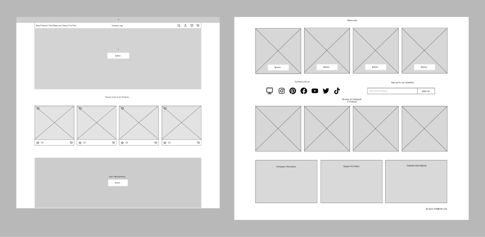

Redesigning TombowUSA's landing page to facilitate easier navigation and promote product sales
September 2022 (1.5 weeks)
UX/UI Designer
Myself
Figma
For my first design project, I wanted to start off small and begin with a redesign of a homepage so that I could become more familiar with using Figma.
One company that I often buy from is Tombow. Tombow, founded in Japan in 1913, is a leader in producing high quality art, crafts, school and office supplies.
TombowUSA is an online e-commerce store as well as a website filled with art and craft resources. How can we redesign the home page to allow for easier navigation for users as well as increase sales?
1. Reorganize the navigation bar for easier navigation
2. Promote popular products on home page with the goal to increase sales
First, I analyzed the home page of 3 other brands that provided similar services/products to TombowUSA. After noting down first impressions, I compiled the features that I enjoyed the most.
After taking a look at how competitors designed their websites, I began drawing up wireframes!
My initial impression of TombowUSA’s navigation bar was that it was quite busy with two different rows.
I simplified the navigation bar with more broader categories as well as using icons that can replace words. I intentionally made the drop down icon next to each category larger as well as a different color so it can be easier seen.

When I initially saw this center piece, it made the website seem more resource-focused which might lead first-time website viewers to not know that the website also functions as an e-commerce store.
I redesigned the center piece so it has two call-to-actions so viewers will automatically know the two important aspects of the TombowUSA website.
Similar to one of its competitors, I thought it would be a good idea to have a shopping feature embedded into the home page so that it makes shopping easier and also promotes products directly on the home page.
I opted to use a carousel pattern so more items can be displayed. A smaller feature I added was the “like” option which is also included in the navigation bar for easy access to see previously liked items.
This was my first-ever project using Figma! Despite all of the mini tutorials I completed prior to starting this project, I still found myself struggling to design elements how I envisioned. The biggest issue I kept running into was making auto-layout work properly within components. However, through re-watching tutorials and trial/error, I was able to successfully make it work out.
If I had more time on this project, I would have started off with interviewing Tombow consumers and learning their opinions on the current website. I would also design the process of making an order through the home page as well as make a complementary high-fidelity prototype.
Hypothetically, if this were to ship, I would want to see if there was an increase in sales and what % of sales were directly from the home page feature.